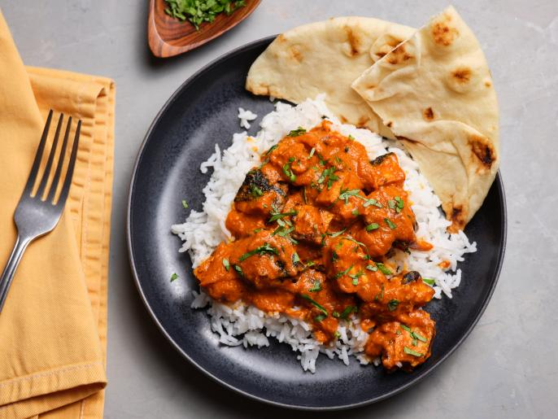

Chicken Tikka Masala
This is an easy, yet somewhat involved recipe for the popular dish Chicken Tikka Masala. Making this does require some prepwork and preplanning mostly due to the extensive list of ingredients, and marinating time of the chicken. You will need a grill, or at least a George Foreman grill. Let's get started with the grocery list!
- Three large chicken breasts
- Plain yogurt
- One lemon or lemon juice
- Ginger, or ginger paste
- Two 8oz cans of tomato sauce (the larger can is only 14 oz, so you'll need the two smaller cans to keep the ratio correct)
- One pint of heavy cream, or heavy whipping cream
- Jalapenos, two to four depending your desired level of spice
- Butter
- Garlic
- Paprika
- Cumin
- Cinnamon
- Cayenne Pepper
- Black Pepper
- Salt
- Jasmine Rice
- Cilantro (optional)
- Naan
For the marinade you'll need:
- 1 1/2 cups of plain yogurt
- The juice of half of a lemon
- 1 tablespoon of minced ginger
- 2 teaspoons of cumin
- 2 teaspoons of cayenne pepper
- 2 teaspoons of black pepper
- 2 teaspoons of salt
- 1 teaspoon of cinnamon
Mix the above ingredients well in a large bowl. Butterfly your chicken breasts, put them in the marinade, again mixing to make sure the marinade covers both sides of the breasts. Allow the meat to marinate for at least two hours, the longer the better.
The timing for the next part is a little tricky, the goal is to have the sauce simmering for a few minutes by the time the meat is finished. That way you can cook the meat in the sauce for a few more minutes while the naan and rice are finishing up. Using an Instant Pot or a rice cooker makes this much easier, and will be how I describe the process.
- Start two cups of rice in the Instant Pot or rice cooker with two tablespoons of butter, and cilantro if desired.
- Place two tablespoons of butter, the diced jalapenos, and two teaspoons of minced garlic into a saucepan over medium heat.
- While the pan is warming, grease and light the grill, setting it to high heat.
- Come back to your saucepan and stir the jalapenos and garlic.
Then add this combination of spices:
- Four teaspoons of cumin
- Four teaspoons of black pepper
- Four teaspoons of paprika
- Two to Four teaspoons of cayenne, depending on desired spice
- Two teaspoons of salt
- The spices should soak in the butter and it will look a bit dry in the pan, this is fine. Next, add the two cans of tomato sauce, and pint of heavy cream. Stir frequently, and bring to a simmer.
- While the sauce is warming, it's time to put the chicken on the grill. The chicken should be placed over high heat for about 6 to 7 minutes on each side. Double check that it's cooked up to temp with a meat thermometer. You should only need to flip once, unless you have some extra thick pieces.
- Continue stirring the simmering sauce frequently while the chicken is cooking, once a strong simmer is going, reduce the heat to low-medium.
- Once the chicken is finshed, bring it in and dice. If you're using an oven to cook the naan, start preheating prior to dicing. Put the diced chicken into the sauce, and again, stir frequently.
- Put the naan into the oven, or toaster oven, for as long as recommended on the package. By the time it is finished, the meat and sauce will be ready, and the rice should have finsihed as well.
Serve this dish with the naan on the side, and garnish with cilantro if you wish. Experiment with spice levels by altering the amount of jalapenos and cayenne in the recipe. Enjoy!
Return to Home